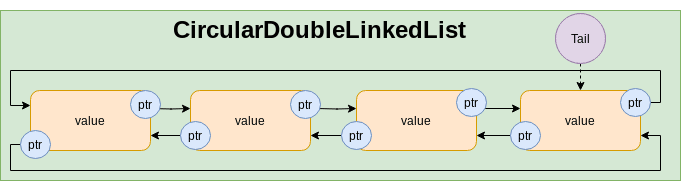

数据结构与算法
目录
- Memory
- Algorithm
- Data Structures
- Contiguous Memory Data Structures
- Discontiguous Memory Data Structures
- Combination of CM and DCM
- Linear Data Structures
Memory
Physical Layer
The physical layer of a computer system is responsible for the actual storage and retrieval of data in electronic or magnetic form. Memory in the physical layer is organized hierarchically, with different types and levels of memory. Types of Memory in the Physical Layer:
- Registers
- Cache Memory
- Main Memory(Random Access Memory: RAM)
- Secondary Memories: (HDD, SSD)
Physical memory is invisible to programs in virtual memory systems and as a programmer you’re not required to reason about it.
Virtual Layer
Location:
Stack: Fast allocation. Faster access.- Moving just an integer pointer for allocates/de-allocates memory.
Heap: Slow Allocation. Slower access- Search Heap
- Sync heap for other threads
- Allocate memory
Arrangement
ContiguousBulk allocation in continuous memory block. (faster access).DiscontiguousDynamic allocation in separated memory blocks.(slower access).
Algorithm
At the core of all algorithms are the fundamental operations that involve accessing and potentially mutating the data blocks, regardless of how we arrange our data-blocks in memory and what are the logical connections between them. At this level, all algorithms can be reduced to one or some of the following operations.
Fundamental operations
read- accessDataBySequence() (Either forward or backward)
- getIndexingInformation():
getStartIndex(),getEndIndex(),getNextIndex(forIndex),getPreviousIndex(forIndex) - accessDataAtRandomIndex(:): For Random access, time complexity should be of order
O(1). - accessDataAtFront()
- accessDataAtBack()
write- insertDataAtRandomIndex(:)
- insertDataAtFront()
- insertDataAtBack()
- removeDataAtRandomIndex(:)
- removeDataAtFront()
- removeDataAtBack()
- updateDataAtRandomIndex(:)
- updateDataAtFront()
- updateDataAtBack()
For example, Linear search algorithm uses accessDataBySequence and compare each item with a specified value to find the answer while Binary search algorithm needs accessDataAtRandomIndex operation.
A note on Random Access: In the context of data structures, random access refers to the ability to instantly access a specific location. With Array, for instance, if you select a random index, the Array data structure can immediately provide you with the address of that index. However, if you attempt to access a random index in a LinkedList, the data structure cannot instantaneously provide the address. Instead, it must iterate from the beginning (starting from head) until it reaches the desired index. Consequently, LinkedLists are considered to have a time complexity of O(n) (Upper bound) for random access operation. Most algorithms require O(1) random access, and languages such as Java have introduced a marker interface(with no methods) called RandomAccess. This interface serves as a reminder that certain algorithms rely on random access. To ensure that these algorithms perform efficiently with your data structure, it is necessary to make it compatible with random access.
Fundamental Algorithms
Fundamental operations form the building blocks upon which algorithms are constructed. Conversely, certain algorithms play fundamental rules for other algorithms. Take, for instance, the impact of input data order on the time efficiency of algorithms. Sorting the data beforehand can greatly simplify our lives, as it has a significant positive effect on the efficiency of numerous algorithms. Sorting can be accomplished through two methods. The first method involves utilizing a sorting algorithm to arrange an unsorted collection. The second method involves utilizing specific data structures, such as binary search trees, that facilitate the sorting of data through amortization.
Sorting algorithms
All sort algorithms need getIndexingInformation, accessDataAtRandomIndex(:) operations. Also items must be comparable.
- In-place sorting algorithms: They need
updateDataAtRandomIndex(:)operation.- Bubble sort
- Selection sor
- Insertion sort
- Heap sort
- Quick sort
- Not In-Place Sorting Algorithms:
- Merge sort
- Radix sort (non-comparison)
- Bucket sort (non-comparison)
Searching Algorithm
- Linear search: needs
accessDataBySequence() - Binary search: needs
accessDataAtRandomIndex(:)withO(1)
Algorithm Design Techniques
- Divide and conquer
- Recursion
- Randomized algorithms: Input MUST be RANDOM.
- Dynamic programming
- Greedy algorithms
Data Structures
Each data structure has the following characteristics:
Virtual layer Memory managementat the virtual layer.Logical connectionbetween data-blocks, eitherimplicitorexplicit.- Implicit: In an Array data-blocks have no direct connection, but implicitly they are arranged in a specific order contiguously in memory.
- Explicit: In LinkedList the blocks may not be stored contiguously in memory, but each node has the connection information to some other nodes.
Rulesfor applying basic operations.- Provides basic
readandwriteoperations with a space/time complexity. The space/time complexities for data structures for basic operations can easily be analyzed using the following concepts: Contiguous Memory data structures and Discontiguous Memory data structures
Contiguous Memory Data Structures
- Init with fixed size. size stays fixed.
- Address of each block can be calculated via:
start + k * blocksize. Random access time complexity isO(1) - Bulk memory allocation
- Same size memory blocks (Same type)
- Base data Structure example: Array
Discontiguous Memory Data Structures
- This arrangement is a special kind of Graph (We can represent graphs using it).
- Each block contains the address of next block.
- Time complexity for random access operation is
O(n) - Dynamic memory allocation
- Memory block sizes can be different (Different types).
- Base data structure example: LinkedList
Combination of CM and DCM
- A contiguous-memory array of pointers to contiguous-memory or discontiguous-memory collection of objects.
- Time complexity for random access operations is
O(1)(via array of pointers) but accessing objects in non-continuous memory have a little overhead. - Bulk memory allocation for address (pointer) array, dynamic memory allocation for objects.
- Objects can have different memory sizes (different types).
- Base data structure example: An array of referenced objects in most programming languages.
Linear Data Structures
By employing one or a combination of the aforementioned concepts, basic data structures can be implemented, serving as the foundation for more intricate data structures. Additionally, the space and time complexities, as well as memory costs, can be readily analyzed by leveraging the complexities and costs associated with these fundamental concepts.
Array
In Programming languages, Arrays are built-in types. Array of pointers (or array of reference types) acts like Combination of CM and DCM. For primitive types (or value types like Int, enum, struct in C#,Swift,…) if stored in stack, the behavior is like Contiguous Memory data structures. But if the primitives get boxed and be allocated in the heap, the behavior is like Combination of CM and DCM.
Basic operationstime complexity: Same as Contiguous Memory data structuresGood:accessAtRandomIndex,insertAtBack,removeAtBackoperations.- Bulk memory allocation (fast).
- Contiguous memory. Fast access.
- If used with primitive types (Value types), no dynamic memory allocation cost.
Not good:insertAtFront,insertAtMiddle,removeAtFront,removeAtMiddleOperations.- Fixed size.
- Programming Languages implementations:
- CPP: Array size is compile-time constant.

DynamicArray
Similar to array, but can grow at runtime. DynamicArray of pointers (or DynamicArray of reference types) acts like Combination of CM and DCM. For primitive types (or value types like Int, enum, struct in C#,Swift,…) the behavior is like Contiguous Memory data structures. Steps for resizing:
- allocate new array with new size
- copy the old array values to the new array
- delete the old array
Basic operationstime complexity: Same as Contiguous Memory data structuresGood:accessAtRandomIndex,insertAtBack,removeAtBackoperations.- Bulk memory allocation (fast).
- If used with primitive types (Value types), no dynamic memory allocation cost.
Not good:insertAtFront,insertAtMiddle,removeAtFront,removeAtMiddleOperations.- New memory allocations and copy cost when capacity is full.
- Has unused memory allocation based on growth strategy. For example in Swift programming language, each time an array capacity is full, it double the capacity of the array.
- Programming Languages implementations:
- CPP: Vector.
Ring Buffer
A ring buffer is a specialized data structure implemented using an array. It is a static-sized buffer where read and write operations occur through two distinct pointers that iterate through the array in a circular manner.

Basic operationstime complexity: Same as Array with the following improvement:insertAtFrontisO(1)removeAtFrontisO(1)
Good:accessAtRandomIndex,insertoperation.- Bulk memory allocation (fast).
- If used with primitive types (Value types), no dynamic memory allocation cost.
- As it is fixed-size, we can map it to virtual memory layer memory page to make it super fast.
Not good:- Fixed size.
- Write operations may fail if the frequency of writes exceeds the frequency of reads.
- Programming Languages implementations:
- CPP: Has no built-in implementation for LinkedList. Here is an implementation.
LinkedList
Basic operationstime complexity: Same as Discontiguous Memory data structures with one improvement.insertAtBack()becomesO(1)because we keep track of tail.removeAtBack()staysO(n)because we have to iterate from head to index n-1 to remove n.
Good:insertAtFront,removeAtFront,insertAtBackoperations.
Not good:accessAtRandomIndex,removeAtBack,insertAtMiddle,removeAtMiddleOperations.- Dynamic memory allocation (slow).
- Programming Languages implementations:
- CPP: forward_list.

FreeList
As you have noticed, one of the Not Goods of a LinkedList data structure is dynamic memory allocation. It means, whenever you need a new node, you have to create a new one dynamically using new keyword. Dynamic memory allocation is a heavy task. One way of resolving this issue is to use FreeLists. FreeLists can be thought of as a reservoir for the LinkedList nodes. One approach is to initialize a FreeList with a sequence of nodes and whenever you need a Node for your LinkedList, you get one from the FreeList instance and when you remove a Node from the LinkedList, you will not free the memory, but return it to the FreeList reservoir to be used again later. Another approach is the following implementation for LinkedListNode with a private static freelist. In this implementation, the freelist is not initialized with an initial size but it grows as the new nodes are added.
class LinkListNode<E> { // Singly linked list node with freelist support
// Extensions to support freelists
private static LinkListNode freelist = null; // Freelist for the class
private E value; // Value for this node
private LinkListNode<E> next; // Point to next node in list
// Constructors
LinkList(E it, LinkListNode<E> inn) { value = it; next = inn; }
LinkList(LinkListNode<E> inn) { value = null; next = inn; }
E element() { return value; } // Return the value
E setElement(E it) { return value = it; } // Set element value
LinkListNode<E> next() { return next; } // Return next link
LinkListNode<E> setNext(LinkListNode<E> inn) { return next = inn; } // Set next link
// Return a new link, from freelist if possible
static <E> LinkListNode<E> get(E it, LinkListNode<E> inn) {
if (freelist == null) {
return new LinkListNode<E>(it, inn); // Get from "new"
}
LinkListNode<E> temp = freelist; // Get from freelist
freelist = freelist.next();
temp.setElement(it);
temp.setNext(inn);
return temp;
}
// Return a link node to the freelist
void release() {
value = null; // Drop reference to the element
next = freelist;
freelist = this;
}
}Double Linked List
Basic operationstime complexity: Same as Discontiguous Memory data structures with two improvements:insertAtBack()becomesO(1).removeAtBack()becomesO(1). Now we have access to n-1 from n and we can remove the pointer to n from n-1.
Good:insertAtFront,removeAtFront,insertAtBack,removeAtBackoperations.
Not good:accessAtRandomIndex,insertAtMiddleOperations.- Dynamic memory allocation (slow).
- High overhead of extra storage for the forward and back reference.
- Programming Languages implementations:
- CPP: list is doubly linkedList.

CircularLinkedList
Basic operationstime complexity: Same as LinkedList with some more capabilities.- We can traverse to a previous node
- We can traverse in loop.
CircularDoubleLinkedList

Basic operationstime complexity: Same as DoubleLinkedList with some more capabilities.- We can traverse to a previous node
- We can traverse in loop in both direction.
Stack
Stack is a Last-In-First-Out(LIFO) data structure. Any data structure that is Good at insert/remove from one of the ends can be used as a container for Stack. Based on this, stacks can be implemented using DynamicArray (Good at add/remove from the back), LinkedList (Good at add/remove from front), DoubleLinkedList(Good at add/remove from both front and back) and Deque. Each implementation inherits Good and Not Good of the container data structure.
Stack via DynamicArray
Basic operationstime complexity: Same as DynamicArray:Methods:push():insertAtBackon array container.pop:removeAtBackon array container.
Good:push()andpop()areO(1)operations.- Bulk memory allocation for pointers.
- If used with primitive types (value types), no dynamic memory allocation cost.
Not good:- New memory allocations and copy cost when internal array capacity is full.
- Has unused memory allocation based on growth strategy of the pointer array.
- Programming Languages implementations:
- CPP: Stack. In CPP vector, deque and list(DoubleLinkedList) can be used as container for Stack.
Stack via LinkedList
Basic operationstime complexity: Same as LinkedList. We use Head of LinkedList to insert/remove.Methods:push():insertAtFronton LinkedList container.pop:removeAtFronton LinkedList container.
Good:push()andpop()areO(1)operations.
Not good:accessAtRandomIndexisO(n).- Dynamic memory allocation (slow).
Stack via Deque
Deque data structure can be implemented using Deque via DoubleLinkedList or Deque via Array. The Deque can serve as a container for a Stack due to its behavior. C++ default container for Stack is deque.
Queue
Queue data structure is First-In-First-Out. Every data structure that is Good at addAtFront and removeAtBack or vice versa can be used as a container for Queue data structure. DoubleLinkedList(Good at add/remove at both ends) can be used as the containers for Queue data structure. Also RingBuffer can be used for fixed size queues. DynamicArray: is not a good container for queue data structure because of O(n) for insert operation. We can amortize this complexity using Queue via Double Stack (Stack via DynamicArray). Another approach is storing contents in multiple smaller arrays, allocating additional arrays at the beginning or end as needed. Indexing is implemented by keeping a dynamic array or a LinkedList containing pointers to each of the smaller arrays. In this case, the cost of inserting reduced from O(n) to the O(small_array.length). This approach is used for deque.
Queue via DoubleLinkedList
Basic operationstime complexity: DoubleLinkedListMethods:enqueue():insertAtFronton DoubleLinkedList container.dequeue():removeAtBackon DoubleLinkedList container.
Good:enqueue()anddequeue()areO(1)operations.
Not good:accessAtRandomIndexoperation.- Extra memory for forward/backward pointers.
- Dynamic memory allocation (slow).
- Programming Languages implementations:
- CPP: queue in cpp can has deque or list (DoubleLinkedList) as the container. the default container is deque.
Queue via RingBuffer
Basic operationstime complexity: RingBufferMethods:enqueue():insertAtRandomIndexon Array container.dequeue():accessAtRandomIndexon Array container.
Good:enqueue()anddequeue()areO(1)operations.- If used for primitive types (value types), No dynamic allocation.
Not good:- Fixed size,
enqueue()may fail.
- Fixed size,

Queue via Double Stack
If we use DynamicArray as container for our queue, the dequeue() time complexity would be O(n) (Adding items to start of an array is an O(n) operation ). But we can amortize this complexity to O(1) using two stacks. LeftStack for enqueue() and the RightStack for dequeue(). Each time the LeftStack is empty, copy the RightStack contents to the LeftStack. This operation guarantees First-In-First-Out for the queue.
Basic operationstime complexity: Similar to Stack via DynamicArray.Methods:enqueue():insertAtBackon left Array container (the enqueue stack).dequeue():removeAtBackon right Array container (the dequeue stack).
Good:enqueue()anddequeue()areO(1)operations.- If used for primitive types (value types), No dynamic allocation.
Not good:- New memory allocations and copy cost when capacity is full.
- Has unused memory allocation based on growth strategy.

Deque
Deque (Double-Ended Queue) are a type of Queue that enqueue() and dequeue() can happen at both ends. Every data structure that is Good at insert/remove from both ends can be used as a container for Deque data structure. The only data structure that fullfil this requirement is DoubleLinkedList. Array is not a good data structure for implementing Deque data structure directly. However we can use some tricks to use Array as a container for Deque data structure. See Deque via Array.

Deque via DoubleLinkedList
Implementing a Deque via DoubleLinkedList is straightforward as this data structure has O(1) for insertAtFront/removeAtFront and insertAtBack/removeAtBack operations.
Methods:pushBack(): insertAtBack of the DoubleLinkedList container.pushFront(): insertAtFront of the DoubleLinkedList container.popBack(): removeAtBack of the DoubleLinkedList container.popFront(): removeAtFront of the DoubleLinkedList container.
Good:- Easy implementation
Not Good:- Random access operation.
- Dynamic memory allocation (slow).
- High overhead of extra storage for the forward and back references.
Deque via Array
As it was the case for Queue data structure, Array cannot be used as a container for Deque data structure directly because insertAtFront/removeAtFront operations are not O(1) for Arrays. We can use one of the following techniques to use Array as a container:
- Using a special RingBuffer.
- Using an Array and allocating deque contents from the center of the underlying array, and resizing the underlying array when either end is reached.
- Storing contents in multiple smaller arrays, allocating additional arrays at the beginning or end as needed. Indexing is implemented by keeping a dynamic array containing pointers to each of the smaller arrays. In this case, the cost of resizing the array in step 2 is eliminated but different small arrays are not allocated contiguously in memory.
Good:- Random Access operation
Not Good- More complex implementation
- Need for array resize when filled
- Programming Languages implementations:
Priority Queue
PriorityQueue is the same as Queue with one difference. The dequeue operation is not for the first item that has been inserted. Instead the dequeue item is selected based on a priority criteria and the item may be at the front, the middle or the end of the collection. Any data structure that is Good at inserting at one of the ends can be used as a container for PriorityQueue. As finding the item to be dequeued includes a searching phase, for linear data structures as the container for PriorityQueue the time complexity of dequeue operation is O(n). In case of Heap data structure as the container, the time complexity reduces to O(log(n)) due to internal structure of the Heap.
PriorityQueue via DynamicArray
Methods:enqueue():insertAtBackon Array container.dequeue(): iterate and thenremoveAtMiddleon Array container. Time complexity isO(n).
Good:enqueue()isO(1)operation.- If used for primitive types (value types), No dynamic allocation.
Not good:dequeue()operation isO(n).- New memory allocations and copy cost when capacity is full.
- Has unused memory allocation based on growth strategy.
- Programming Languages implementations:
- CPP: priority_queue is using deque as a container by default. vector also can be used.
PriorityQueue via LinkedList
Methods:enqueue():insertAtBackon Array container.dequeue(): iterate and thenremoveAtMiddleon Array container. Time complexity isO(n).
Good:enqueue()isO(1)operation.- If used for primitive types (value types), No dynamic allocation.
Not good:dequeue()operation isO(n).- New memory allocations and copy cost when capacity is full.
- Has unused memory allocation based on growth strategy.
- Programming Languages implementations:
- CPP: priority_queue is using deque as a container by default. vector also can be used.
PriorityQueue via Deque
Deque data structure can be implemented using either Deque via DoubleLinkedList or Deque via Array and PriorityQueue can use it as a container.
PriorityQueue via BinaryHeap
Methods:enqueue():inserton BinaryHeap container.dequeue():deleteon BinaryHeap container.
Good:dequeue()isO(log(n))operation.
Not good:enqueueisO(log(n))operation. In PriorityQueue via DynamicArray and PriorityQueue via LinkedList this operation isO(1).
Associative Collections
An associative collection is an abstract data type that stores a collection of (key, value) pairs, ensuring that each possible key appears at most once in the collection. However, there is no standardized naming convention for these types of data structures, leading to varying terminology across different programming languages, which can cause confusion. Some alternative names for associative collections include associative array, map, symbol table, or dictionary. See here.
UnorderedMap or HashTable
Other name is HashTable. The main idea behind a Hashtable is to use a hashing function to map keys to specific buckets or slots in an array. Each bucket can store one or more key-value pairs. Hash functions can occasionally generate the same index for different keys, resulting in a collision. To handle collisions efficiently, Hashtable data structures employ various strategies:
- Each bucket in the array is a LinkedList of key-value pairs.
- Open addressing
- Resizing the Array.
For most data structures, a linear search is an O(n) or O(log(n)) operation. HashTable is a data structure with an amortized O(1) time complexity for searching. Length of arrays in a HashTable is a prime number.
Good:O(1)for search operation.
Not Good:- Collection has no order. No Random access.
- If LinkedList used for collision handling: Worst-case for search can be
O(n)(All nodes collide). Average-case is notO(1).
- Programming Languages implementations:
- CPP: unordered_map is an unordered collection created using HashTable. Another version is unordered_multimap that allows for repetitive keys. in the unordered_map version the keys are unique.
SortedMap
A collection of key-value pairs which is sorted by the key.
Unordered
A collection of key-value pairs which is sorted by the key.
OrderedSet via HashTable and LinkedList
It is almost exactly like OrderedMap via HashTable and LinkedList with the distinction that the node has only a key and no value exists. In Java, it is implemented using HashTable and the values for the nodes are set to a fixed value.
Good:- Order of the insertion is preserved. (Unlike SortedSet, the keys are not sorted.)
Not Good:- No random access with
O(1)because of LinkedList.
- No random access with
OrderedSet via Self Balancing Tree
It is almost exactly like OrderedMap via HashTable and LinkedList with the distinction that the node has only a key and no value exists. In Java, it is implemented using HashTable and the values for the nodes are set to a fixed value.
Good:- Order of the insertion is preserved. (Unlike SortedSet, the keys are not sorted.)
Not Good:- No random access with
O(1)because of LinkedList.
- No random access with